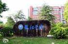
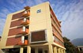

标志性建筑

瓯江院石（瓯江门面担当）位于 瓯4广场前，瓯江学院学生管理工作方面以提倡学生“自我管理、自我教育、自我服务、自我发展”为宗旨，在学生全面素质提高基础上尊重个性的发展；注重加强学生思想政治教育和日常行为管理，强调育人为本，德育为先，一切工作为了学生，为了学生做好一切工作，全力实施“全员育人、全过程育人、全方位育人”，努力培养德才兼备的优秀人才。

瓯江教学楼，作为广大瓯江学子获取知识的地点，健在瓯江学院中心位置，设有瓯4，瓯5，瓯7，瓯8等多撞教学楼，给学生提供了更多的学习场所，教学环境优美，教室设备齐全，上课氛围好。